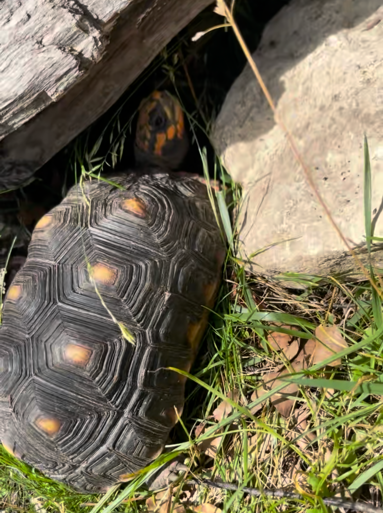
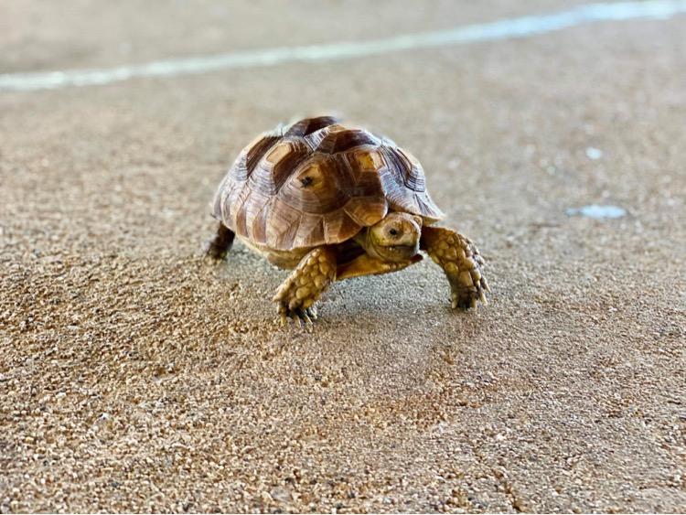

Lucy is an African spurred tortoise and is approximately 12–13 years old.
She’s a gentle giant that's not shy about making noise for attention!
Lucy loves long walks, dandelion leaves, and flowers.
While we were doing an educational show near Chicago Ridge, a local resident
spotted a tortoise wandering along the side of Southwest Highway. We went to
the rescue the turtle as soon as possible. Despite the dire situation, she
managed to avoid major injury. Once we brought her home, we tried to locate
her owner, but they were never found. So, we named her Lucky Lucy.
She's been a beloved member of the Spizzirri family ever since.

Tatortot is a Red-Footed Tortoise who joined the rescue around 2020. We estimated Tatortot to be around 12 years old, which is still young for his species. He is calm, curious, and always ready for a slow stroll; he is a perfect example of why Redfoots are such beloved tortoises.
Mikey is a Sulcatta Tortoise that is over 5 years old, yet he is really small. By the time he was surrendered, his growth has already been severly stunted. Mikey is only tiny in size. His personality is bigger than he is. with a cuteness level to match.

Nugget is a Common Snapping Turtle native to Illinois. In 2022 a man walking
his dog discovered a clutch of turtle eggs that had been dug up by raccoons.
He found one egg that survived in the nest. Wanting to help the animal
survive, he incubated and hatched the tiny turtle: Nugget.
As she grew he realized he couldn’t provide the long-term care she needed.
He knew wild animals couldn't be released after being raised in captivity,
so he turned to us for help. That's when Nugget officially joined the rescue.